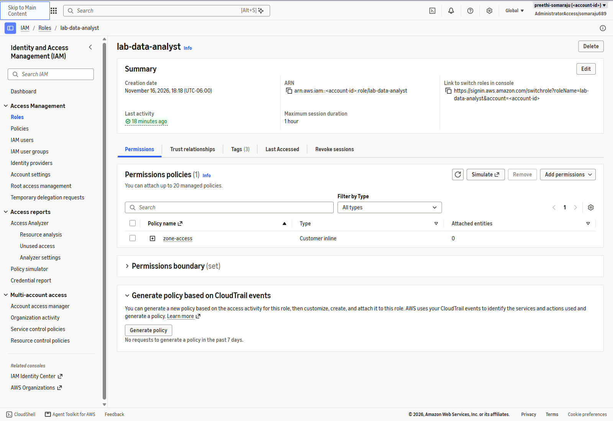
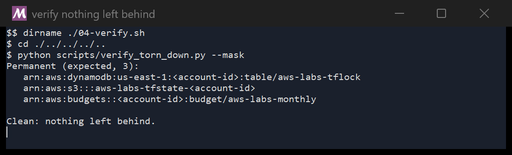

Preethi Somaraju › Writing › AWS data engineering labs › Lab 02
Lab 02 — IAM for data access: proving the zone boundary holds
A data lake has zones — raw, curated, analytics — and the zones exist because different people should see different things. Usually that separation is a naming convention and an honour system. This lab makes it an enforced control, and then tries to cross it.
Cost: under $0.05. Everything was destroyed afterwards and the teardown verified.
Think of the data lake as a restaurant. Raw is the delivery bay where crates arrive unchecked. Curated is the kitchen pass, where everything has been cleaned and is fit to serve. Analytics is the notepad where someone writes down what they worked out.
The kitchen staff should be able to reach the delivery bay. The person doing the sums should not — they only need the pass and their notepad. This lab sets up those rules in AWS so the doors are actually locked, then walks up to each one and tries the handle.
The problem
Raw landing data is unconformed and often carries fields nobody has cleared for general use. Curated data is the version the business is allowed to read. Analytics output is where query results land.
With one shared set of credentials reaching all three prefixes, “analysts cannot see raw data” is a claim with nothing behind it. Nobody can demonstrate it, and nobody finds out it was false until someone goes looking.
- S3
- Amazon’s file storage. A bucket is a
container; a prefix is a folder-like path inside it, such as
raw/. - IAM role
- A set of permissions you temporarily borrow, like signing out a badge, rather than a permanent key of your own. The badge expires on its own.
- Policy
- The written rules attached to a role: what it may do, and to what.
- Permissions boundary
- A ceiling. Even if somebody later writes a rule granting more, the boundary still caps it.
- Terraform
- A tool that builds cloud infrastructure from a text file, so the setup is repeatable and reviewable instead of clicked together by hand.
- CloudTrail
- AWS’s record of who did what, and when.
What the roles can do
| Principal | Must succeed | Must be denied |
|---|---|---|
data-engineer | read + write raw/ and curated/ | writing analytics/; creating IAM users |
data-analyst | read curated/, read + write analytics/ | any read of raw/; writing curated/ |
| either | — | attaching a policy to itself |
Every row became a test.

Four decisions worth stating
The analyst can write to analytics/. Athena
has to put results somewhere. A least-privilege design that forgets this
produces a role that cannot run a query — which is how least-privilege
attempts actually fail in practice, by being quietly worked around.
The engineer cannot write to analytics/.
Separation runs both ways, so a pipeline bug cannot overwrite someone’s
query output.
raw/ is an explicit Deny for the
analyst, not an absent allow. An absent allow is reversed the
moment any later policy grants the action. An explicit deny is not.
ListBucket is constrained by
s3:prefix. Without that condition the analyst could
enumerate raw/ — leaking schema, volume and naming
conventions — while still being unable to read a single object.
Lake Formation is the right tool for table- and column-level grants and is deliberately absent: there is no Glue catalog until week 9, so using it here would mean demonstrating it against nothing.
The permissions boundary
This is what makes the lab more than a naive least-privilege exercise. It caps what either role can ever reach, regardless of what its own identity policy says:
data "aws_iam_policy_document" "boundary" {
statement {
sid = "DataPlaneWork"
actions = ["s3:*", "athena:*", "glue:*", "logs:*", "sts:GetCallerIdentity"]
resources = ["*"]
}
statement {
sid = "NoIdentitySelfService"
effect = "Deny"
actions = ["iam:*", "organizations:*", "account:*"]
resources = ["*"]
}
}Neither role’s identity policy mentions IAM at all. The boundary is what stops a role granting itself more.

terraform plan — 17 resources.

Testing: eighteen cases, two stages
A successful terraform apply means Terraform’s API
calls returned success. It says nothing about whether the policies do what
they claim.
Stage one used
aws iam simulate-principal-policy, which answers “would
this be allowed” without creating a single object. Ten cases, all as
expected. The interesting pair:
| Principal | Action | Resource | Result |
|---|---|---|---|
| analyst | s3:PutObject | curated/ | implicitDeny |
| analyst | s3:GetObject | raw/ | explicitDeny |
Writing to curated/ fails because nothing allows it. Reading
raw/ fails because something forbids it. The first is reversed
by any future policy that grants more; the second is not. That distinction
is the whole reason the deny is written out rather than left implied.
A room with no door and a room with a locked door both keep you out today. But if someone later adds a door to the first room, you can walk in. The locked door stays locked.
That is the difference between implicit deny (nothing lets you in) and explicit deny (something keeps you out). For raw data, I wanted the locked door.

Stage two ran real calls under assumed sessions. As the analyst:
$ aws s3api get-object --bucket lab-data-lake-a1b2c3d4 \
--key raw/sample.txt /tmp/leak.txt
An error occurred (AccessDenied) when calling the GetObject operation:
User: arn:aws:sts::<account-id>:assumed-role/lab-data-analyst/ana-raw is not
authorized to perform: s3:GetObject on resource:
"arn:aws:s3:::lab-data-lake-a1b2c3d4/raw/sample.txt"
with an explicit deny in an identity-based policyAWS names the mechanism itself: with an explicit deny in an identity-based policy. And listing is refused before any object is touched:
$ aws s3 ls s3://lab-data-lake-a1b2c3d4/raw/
An error occurred (AccessDenied) when calling the ListObjectsV2 operation: Access DeniedWhat went wrong
A negative test reported a false failure. The
analyst-reads-raw/ check came back as a failure:
fatal error: An error occurred (403) when calling the HeadObject operation: ForbiddenThe assertion was looking for AccessDenied and did not find
it. The cause: aws s3 cp issues a HeadObject
before the GET, and a denied HEAD returns a bare
403 Forbidden with no reason attached — S3 deliberately
does not explain itself on a HEAD. The access was correctly denied. The
assertion was too narrow.
This is the mirror of the usual
trap. The familiar failure mode is a test that passes for the wrong reason;
this one failed for the wrong reason, and taking it at face value would have
meant debugging a policy that was already correct. For IAM work:
aws s3 tells you that something failed,
aws s3api tells you what stopped it.
Teardown, verified
“I ran destroy” and “nothing is left” are different claims, and only the second one keeps the bill at zero. The verifier makes two passes: everything tagged for the series, and separately the services that bill whether tagged or not.


Takeaways
An explicit deny and an absent allow look identical until someone adds a
policy. The simulator distinguishes them — explicitDeny
versus implicitDeny — and that difference is worth
designing around.
Constraining ListBucket with s3:prefix matters
more than it looks. Object keys leak schema, partitioning and volume. A role
that cannot read raw/ but can list it still learns a great
deal.
Least privilege fails in practice by being too tight, not too loose. An
analyst role that cannot write query results cannot run a query, so somebody
widens it in a hurry and the care is lost. Designing in the write path to
analytics/ from the start is what keeps the rest intact.
What production would need
Service Control Policies so the boundary cannot simply be detached, Lake Formation for table- and column-level grants, separate accounts per environment, CloudTrail log file validation feeding an alerting pipeline, and access reviewed on a schedule rather than only at creation. None of that is implemented here.
Code
Terraform, tests, those scripts, and the full write-up: github.com/preethi-somaraju/aws-labs